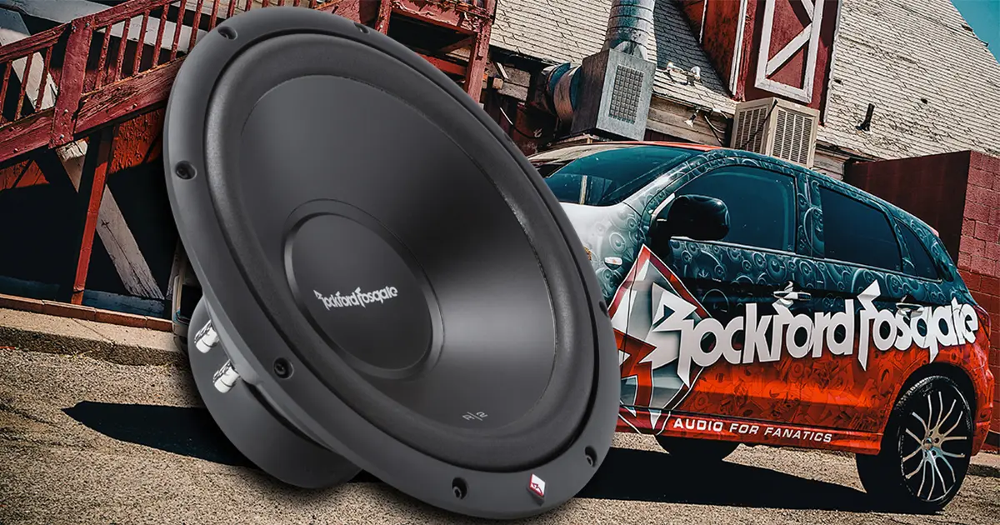
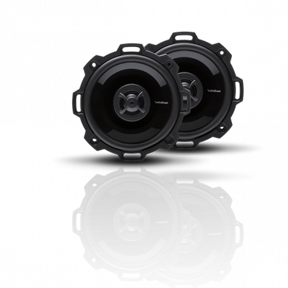
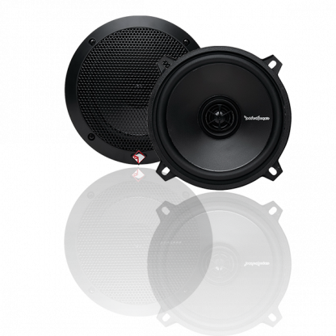

fidelidad de sonido en todas las medidas
parlantes 6"

- • Impedancia nominal (ohmios) 4 ohmios
- • Cumple con CEA-2031 Directrices CEA-2031
- • Profundidad de montaje del tweeter
- • Tamaño de rango medio
- • (diámetro nominal) 5.25"
- • Tipo de altavozCoaxial de 2 vías
- • TransversalTweeter de paso alto (HP): 6dB
- • Rejilla/anillo embellecedor incluidoSí
- • Peso de envío3.53 libras (1,60 kg.)
- • Manejo de potencia (RMS)40 vatios RMS
- • 80 vatios máx .
- • Profundidad de montaje de rango medio1,93" (49 mm)
- • Accesorios de montajeSí
- • (diámetro nominal)0,50" (12,7 mm)
- • Respuesta de frecuencia (Hz)62Hz - 20kHz

- • Tamaño de rango medio (diámetro nominal): 6.5
- • Cumple con CEA-2031 Directrices CEA-2031
- • Profundidad de montaje de rango medio: 2,24 (57 mm)
- • Tamaño del tweeter (diámetro nominal): 1.0 (25.4 mm)
- • Manejo de potencia (RMS): 60 vatios RMS 120 vatios máximo
- • Crossover: Tweeter externo cruzado 12dB / octava
- • Rejilla / Anillo de ajuste incluido: Sí
- • Accesorios de montaje: Sí
- • Tipo de altavoz: Sistema de componentes
- • Profundidad de montaje de tweeter: 0.50 (13 mm)
- • Impedancia nominal (ohmios): 4 ohmios
- • Respuesta de frecuencia (Hz): 43Hz - 20kHz
- • Sensibilidad (dB @ 1W / 1M): 88